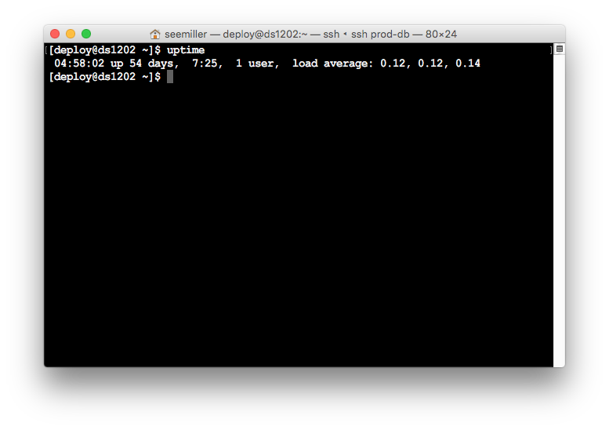

uptime
How long has the server been running and current load
dmesg
Shows system messages
mpstat -P ALL 1
Shows CPU utilization
iostat -xz 1
Shows Disk I/O utilization
sar -n DEV 1
Show network interface utilization
top